Menu
Início
Calculadora
Projetos de Compensação
Escolha uma compensação
Emissões de Foguetes Históricos
Emissões de Foguetes Históricos
Emissões e Pegada de Carbono de Foguetes Históricos
FOGUETES
DA HISTORIA
SATURNO V
ÔNIBUS ESPACIAL
FALCON 9
Análise Comparativa
Veja abaixo os gráficos que comparam as emissões de CO₂ dos foguetes ao longo do tempo: